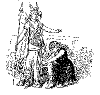

The Toast Point Page presents
Modified Rapture!
a collection of textual and lyrical alterations
generated by poor mad brains during rehearsals of Gilbert & Sullivan operettas
Last Updated May, 2006
The History - The Savoynet mailing list is an internet-based list for Gilbert and Sullivan aficionados. Having recently joined the list, I sent out the following plea:
In the heat and boredom of rehearsals, quite often specific lines or entire songs can be parodied and shared with the cast at cast parties or tense moments of rehearsal. Any good ones out there?
There were so many wonderful responses I decided to sort them all out and give them a web page. So here 'tis, in show order, with extra goodies thrown in.
If there are any I've forgotten, or never got, send them to me!.
Trial by Jury * The Sorcerer * HMS Pinafore
The Pirates of Penzance * Patience * Iolanthe
Princess Ida * The Mikado * Ruddigore
The Yeomen of the Guard * The Gondoliers * Utopia, Ltd.
from Steven Lichtenstein
DEFENDANT (lisping in this production):
Ith thith the court of the Ekthchequer?
CHORUS:
It is!
DEFENDANT:
Be firm, be firm my pee-nith;
Your evil thtar ith at itth thee-nith.
CHORUS:
Who are you?
DEFENDANT:
Mind your own “beeth-nith!”
FOREMAN OF THE JURY:
We've but one word, m'lord, and that is Rupture.
During a recent production of "Trial By Jury," someone started singing, "Come, substantial cabbages!" instead of "Come, substantial damages!" We couldn't decide if it was a farmer's prayer or a druid's curse.
COUNSEL:
I wonder whether they'll sleep together with whips and leather in manner true?
USHER:
It seems to me, sir, as kinky as she, sir, a judge is he, sir and a good judge too!
J.W. WELLS:
My name is John Wellington Wells, I'm a dealer in magic and smells...
Act I
Leonard Pinsker heard first time 'round
CORCORAN:
You're very, very good, and be it understood, I can man a rifle too.
HEBE:
"And we are the milkmaids and the farmers and the plants!" (which quickly morphed into the alternate "...farmers in his pants!")
Rica Mendes wrote:
Well, Eric, I recall a rather funny and sudden one that happened during the 2nd run of Pinafore during my first year at Oberlin (it was also my first lead [Hebe] and my first time tech directing). Our Ralph, an incredibly talented fellow, was graduating that weekend, and came out with a great improv in the middle of dress rehearsal - he remained in character the whole time, so none of us dared stop him...
"My friends, my leave of Oberlin I'm taking...
For, ah, my (bank account/GPA*) is breaking... "
*I'm not sure which phrase he used...
And I can't remember the rest, but it was brilliant.
DICK DEADEYE:
"You are but slaves. A lady, she? ...a ho! A ho!"
CHORUS:
"Shall we submit? Are we butt slaves?"
DEADEYE:
Forebear, nor carry out the scheme you've planned,
She is a lady, you a music stand...
Act II
James Tappin heard as a child:
CORCORAN:
I don't see at what you're driving, Mr. Clady, Mr. Clady!
SIR JOSEPH:
The fact is, that although I have urged my suit with as much eloquence as is consistent with an official.....uh...memory loss...
From the bells trio: "...and the tar who plows his daughter."
(Used during a scaled-down version of the show in which we had to share a very small stage with the grand piano)
CORCORAN:
Dick Deadeye, I thank you for your warning. I will at once take means to arrest their flight. This piano will afford me ample disguise.
Mary Finn wrote:
I am prone to this sort of foolish behavior. My favorite is a rewrite of "He Is an Englishman" that I think I posted to SavoyNet over a year ago. I originally wrote it when I was costume designer for a production of PINAFORE at MIT, "a many years ago".
For he is an English muffin!
Oh, he might have been a breadstick,
Or pancakes made from Bisquik,
Or even Stove Top Stuffin'.
But in spite of all entreaties
To become a bowl of Wheaties,
He remains an English muffin!
Yes, he is an E-E-E-E-E-E-E-E-English muffin!
As I recall, at the time I wrote this, complex carbohydrates were a hot topic in health news circles.
CORCORAN:
In uttering a proposition to any British tar,
I try to speak with cool persuasion, but you're way over par.
I'm always happy to examine a sailor in my spa,
So call the Bosun to my cabin: we'll try menage a trois.
CORCORAN:
I'm very sorry to disparage a humble foremast lad,
But to seek your captain's HAND in marriage, Why damme, it's too bad!
from David White
Well, when I was doing Pinafore with the Penn Singers at Univ. of Penn in 1989, we used to go around singing:
Go radish, get you mince, to your cabbage with celery;
This is the corn-sequence of dill-endived asparagus!
Katharine Bryant followed up with:
Go, radish, get you hence, to your cabbage with a celery
This is the kumquat quince of dill-endived asparagus!
Act I
FREDERIC (to Ruth):
Oh, falsies! You have deceived me!
RUTH:
I have deceived you?
FREDERIC:
Yes, deceived me!
You told me you were 36D...
RUTH:
And master, am I not so?
FREDERIC
And now I see you're flat as a tree!
(etc.)
FREDERIC:
Faceless woman!
RUTH: (who has no face, and therefore no mouth)
Mmmmmmm, mmmmmm!
FREDERIC:
...oh blushing buds of ever-blooming beauty,
I saw a tart - I saw a tart...
EDITH:
We are quite alone and the sea is as smooth as glass! Suppose we take off our bras... and panties... and wiggle!
SISTERS:
Yes, yes, the very thing!
PIRATES:
"Yes, yes, he is a Major Genital!" and "Yes, yes, the Major Genital comes."
Act II
The following was heard coming from the men's showers after a performance of Pirates:
Now for the pubic hair
Oh joy unbounded
Oh hand relief
Oh rapture unexampled
At last I have a boner I can measure
For repeated acts of rape and pillage
Which at a sense of duty's stern dictation
I, circumcision's victim, have been guilty.
Away, away! My fart's on fire!
Susan Poliniak shared...
this one with me - an evil mind-screwing trick she used on her Major-General when she did Mabel at Penn:
(you gotta sing this to get it)
MAJOR-GENERAL STANLEY:
Tormented with the anguished dread of falsehood unatoned,
I lay upon my sleepless bed and tossed and turned and groaned
To save us all from Satan's pow'r when we had gone astray
Oh, tidings of comfort and joy (etc.)
MAJOR-GENERAL STANLEY:
Resume your ranks and legislative duties,
And take my daughters, all of whom have cooties!
(Herpes instead of cooties was suggested as well)

Act I
CHORUS OF RAPTUROUS MAIDENS (at an ill-attended rehearsal):
"Twenty lovesick maidens we; each of us is two or three..."
"Twenty brain-dead maidens we..."
SAPHIR:
Tis Patience! Sappy girl!
PATIENCE:
For I am blithe, but he is gay... that's why I sit sighing night and day...
DRAGOONS:
We soldiers all are queens, we dress in kinky leather,
Upon the battle scene, we run away together...
When the Duke asks Major Murgatroyd if he's fond of toffee in act one, the director of the particular production being discussed rewrote it to "Are you fond of brownies?" (Boy, *that* one could have been milked if we wanted to...) Anyway, one night, the sequence went this way:
"Tell me, Major, are you fond of large-breasted Swedes?"
"Uhhhhhhh.....very."
"We....are all fond of large-breasted Swedes."
"WE ARE!!!!!!!"
"Yes, and large-breasted Swedes in moderation are a capital thing. But to live on large-breasted Swedes? Brigid for breakfast, Ingrid for dinner..."
BUNTHORNE:
It is a wild...weird...FLESHLY thing! Yet very tender, very yearning, very...precious. I call it "Bruno"...
This also works nicely with "It's a little thing of my own... I call it..."
DRAGOONS:
We've been thrown over, we're aware,
But we don't care, but we don't care,
There's fish in the sea, no doubt of it,
And frankly we don't give a ....
DRAGOONS:
Oh, horror! Urged by his solicitor,
He's actually got the part he auditioned for!
BUNTHORNE:
Oh Fortune, I am hard...
And since Bunthorne is unwell, the presence of the gay dragoons in Patience may mean that:
The pain that is all butter pleasure will change
For the pleasure that's all butt-pain.
CHORUS:
But who is this, whose god-like grace
Proclaims he comes from outer space?
ONE MEMBER OF AFOREMENTIONED CHORUS (OH ALL RIGHT, ME):
But who is this, with god-like grace
Playing Pink Floyd tunes on a five-string bass?
Act II
I always thought that Grosvenor's:
Teasing Tom was a very bad boy
A great big squirt was his favorite toy
could go off in a completely different direction...
Jim Drew, from personal experience, informs us that
Angela, in the second act of Patience, said quite clearly, "...til retribution, like a hoised pawk, came swooping down upon the wrong-doer."
PATIENCE:
This is a boring song
Sung by a boring maid...
SAPHIR:
Oh, Art, we thank thee for Pat Boone!

Act I
IOLANTHE:
A fairy member! Why, that would be delightful!
STREPHON (looking down wistfully):
Indeed...
Act II
LORD CH.:
For you dream you are crossing the Channel and tossing about in a steamer from Dover,
Which is something between a large bathing machine and a very small second-hand Skoda.
LORD CH.:
In your shirt and your socks, the black silk with gold cocks...
Ori Siegel actually sang in performance:
First your counterpane goes and uncovers your toes, then your sheep slips demurely from under you.
Laurence Philips submitted this one to SAVOYNET:
When you're lying awake - from a dreadful mistake, in a state unlike coital elation
From the pain in your eyes, you're unable to rise, to the nuptial nor naughty occasion,
And your brain is on fire, you start to perspire, not from too much night time regalia,
Nor Midsummer heat, but the sordid defeat thats the failure of male genitalia.
You feel such a chimp, so reluctantly limp, as relationships spiral to severance
Oh such is the shame, the finger of blame is firmly grasped round the vas deferens
You rant and you rage, you blame it on age, a stage several paces from senile
You diagnose stress , yet have to confess, the problem is singularly penile.
You seek out a shamen, a shrink and a layman, The trouble they deign to suggest is
Quite simply an issue relating to tissue, located quite close to your testes
Yet just as you reckon no tug, stroke nor beckon, will coax a climactic Niagra
You pop a small pill in and once more you're willing, oh praises on high to Viagra!
QUEEN:
"How would you like to be a fairy guardsman?"
WILLIS:
"Actually, ducky..."
(That was done during a rehearsal, but believe me, during performances, some of Strephon's lines got laughs that I'm sure Gilbert never intended.)
WILLIS (indicating Fairy Queen's dress):
Well ma'am, I don't think much of the British soldier who wouldn't inconvenience himself to save a lady in dis dress.
Act I
FLORIAN:
Will Prince Hilarion's hopes be badly sighted?
GAMA:
P'raps if you undress the lady most politely, most politely...
HILARION: We'll storm their showers...
Act II
(Trying on the ladies robes)
FLORIAN:
There's a stain on this one.
HILARION:
It must be Monica's.
HILARION: (Looking down the front of Ida's dress)
To all your maids we much prefer yours.
Label on the artificial food for the picnic: Unreal its lovely stew, alas.
PSYCHE: (instead of )
Tis death to marry you.
FLORIAN:
Here's a pretty state of things, here's a pretty how-de-do....
PSYCHE:
Oh my brother.
FLORIAN:
Oh my sister.
BOTH:
Oh brother/sister.....
CYRIL:
Aye, hug him girl......
IDA:
Stand fo(u)rth ye three.
(HILARION, CYRIL and FLORIAN look puzzled and try counting on their fingers)
MELISSA:
Madam, without the castle walls
There'd be no castle.
Act III
(opening chorus)
CHORUS: Darth and Mrs. Vader!
GIRLS:
Fill his hole with wonder
GAMA:
My stubborn willy's bent.
GAMA:
And isn't your wife extremely flat, with nothing whatever to fumble at?
GAMA:
She yields, she yields, she answers to our call, we do not ask for more....
GAMA:
Come, Come Hilarion. Begin the Beguine.
From a hack night performance of "Princess Ida," a many years ago: All the men in the chorus had been outfitted with false mustaches (except for the one gentleman who had a natural one), which they hated. During the "cuirass" verse of "This helmet, I suppose," things went like this...
ARAC:
A man is but an ass
Who fights in a cuirass
So off, so off goes that cuirass!
CHORUS:
Yes, yes, yes,
So off goes that mustache!
(chorus men pull off mustaches)
Act I
CHORUS (to Katisha):
"Away, away, dill-flavored one!"
Act II
CHORUS (replying to Katisha):
"Bow-wow to his daughter-in-law elect!"
Act I
RUTH: ...
The pious charity by which we exist is practically wasted!
ZORAH: We shall be disembowelled - that will be the end of it!
DICK DAUNTLESS:
"My heart, it up and says... 'Dick,' it says! -- It calls me 'Dick' because I am one --"
DESPARD:
"I claim young Robin as my former lover!"
Act II
ROSE MAYBUD:
"And I'll be asserting my freedom by flirting with ev'ry cute fellow I meet: I'll cheat!"
from Katherine Bryant
Oh, and then there was the "Ruddigore" brush-up, in which Richard forgot his British flag to wave over Rose Maybud's head. I can't remember the exact words he used, but he said something like, "I am a member of the British Navy, and while that glorious institution stands guard over Rose Maybud..." This was followed by:
ROBIN:
Foiled! And by a jolly jack tar!
ROSE:
Sir Ruthven, have pity. In my book of etiquette, the case of a maiden about to be wedded to one who unexpectedly turns out to have a jolly jack tar in his face, is not considered!
We poor bridesmaids lost it at that point. :)
"Hark! What was that sir?"
"Why an octopus, fired by a dwarf, unless I'm much mistaken."
"Strange and at such an hour. What can it mean?"
FAIRFAX:
Mine is a hard and massive cock!
ALL:
This is our joy-day, Uncle Floyd!
Steve Lichtenstein wrote:
Last night I played piano for a brushup rehearsal of the Lamplighters' Yeomen of the Guard, which is being given two extra performances in Walnut Creek, CA next weekend, following the recent successful run in San Francisco.
We were all fairly tired by the end of the evening, and as the rehearsal was being run somewhat informally, I decided to liven things up a bit. As Meryll approached Carruthers in preparation for wooing her (just before "Rapture, Rapture"), I struck up the opening chords to "Willow Titwillow."
After the laugh, somebody remarked: "It's the same scene." To which someone else replied: "IS it?"
Act I
Jim Drew shares
The one that kept us all struggling, with varying degrees of success, to keep straight faces, however, was when Marco told us all, "And therefore we propose to let impatial fart select for us a mate."
DUKE:
We are here to ascertain the whereabouts of your husband, and to hail you, our daughter, as Her Majesty, the raging Queen of Barataria!
DUKE OF P.T.(to Casilda): It's extraordinary what unprepossessing people one can love, if one gives one's mind to it.
DUCHESS OF P.T.(to Casilda): I loved your husband.
GIANETTA:
Then one of us will be a queen and sh*t on a golden throne!
CHORUS:
As they know we object to pavilions and palaces,
How can they respect our republican phalluses?
Hey, it rhymes better than "fallacies"...
Act II
GIUSEPPE:
We are called "Your Majesty"; we are allowed to buy ourselves magnificent clothes; our subjects frequently nod to us in the streets; the sentries always return our salutes; and we enjoy the inestimable privilege of allowing our guests to sleep in the Lincoln Bedroom for a modest fee.
DON ALHAMBRA:
Now let the loyal leeches gather round...
INEZ:
"His name: Luiz! Behold his royal heinie!"
ZARA: Tan-tan-ta-ra-ra-ra-ra-ra-ra!
FITZBATTLEAXE: Trumpet call of the Christmas fairy!
How many mis-printed Utopia programmes have described Tarara as the pubic exploder?
Extra Goodies
The Patter Man Blues
Written by Mike Nash, 8th February 1997
Oh, a patter-man's lot is a happy one, NOT!
If you'll listen to this brief oration;
From "Trial" to "Grand Duke" he must ride each rebuke
And regale 'em with rapid narration.
He will hone and refine every word, every line
And enunciate all with perfection;
But when he tries to sing, well it don't mean a thing;
All he gets is abuse and rejection.
Though you polish your breathing, projection and tone,
Still you finish up seething, when all's said and done;
All you get is abuse and rejection!
If you wish to succeed singing patter, you'll need
To obey every rule to the letter;
You must practise the art of the old D'Oyly Carte
Till you're Lytton, Green, Pratt, Reed or better.
You must copy the pros from your top to your toes
Every line, every move, every gesture;
For if you should say e'en a word your own way
You'll incur the wrath of your director!
It's a general law, though your zeal it may kill:
If the pros you ignore and you do what you will,
You'll be sure to upset your director!
Comes Sir Ruthven maybe, or the Duke of P.T.,
Oh, there's lots of traditional clowning:
You must run here and there with your arms in the air
Till you're gasping for breath like you're drowning.
Then there's always a dance in a tight pair of pants
As you belt out the bass of a trio;
But to further the pain, you must sing it again,
Only this time, allegro con brio!
Oh, it adds to the chore of a patter-man's day
When you have to encore the worst song in the play
Once again, but allegro con brio!
Though your brain it may teem with a marvellous scheme
To be true to the script, yet original,
There's so much of tradition debarred of omission
Your thoughts become merely vestigial.
Though you feel such a twit, 'cause your costume don't fit
And it grips you too tight round the willy;
Bless your heart, they don't care, it's the cross you must bear:
You're the comic, you've got to look silly!
You've a loftier goal; each audition you go
For a serious role, but do you get it? NO!
You're the comic, you've got to be silly!
HAGSS
(Hogwarts Gilbert and Sullivan Society)
Credits
I didn't credit individual lines above; only complete song parodies. However, all of the above were garnered from the postings of the following clever Savoynetters and others: Mike Nash, Adrian Bridgman, Mary Finn, Rica Mendes, Steve Lichtenstein, Rebecca Consentino, David White, James Tappin, Marc Shepherd, Nick Sales, Karen Ann Loxley, Andrew Solovay, Leonard Pinsker, J. Patrick Adams, Henry Odum, Katherine Bryant, Laurence Philips, Jim Drew, Stephen Turnbull, Ori Siegel and me! If I've left any names out, please let me know.
Trial by Jury * The Sorcerer * HMS Pinafore
The Pirates of Penzance * Patience * Iolanthe
Princess Ida * The Mikado * Ruddigore
The Yeomen of the Guard * The Gondoliers * Utopia, Ltd.
Back to The Toast Point Page!